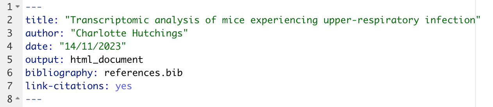
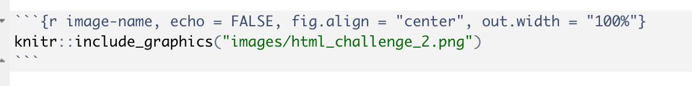
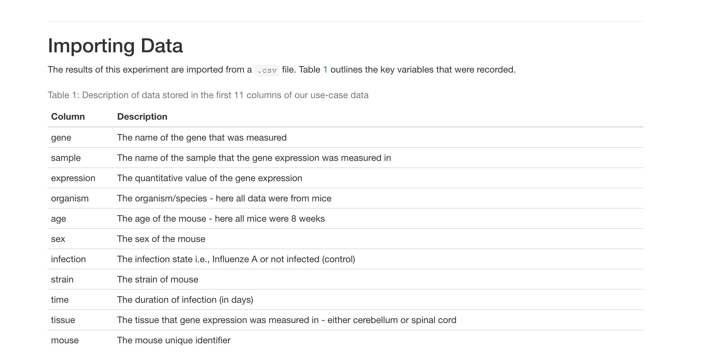
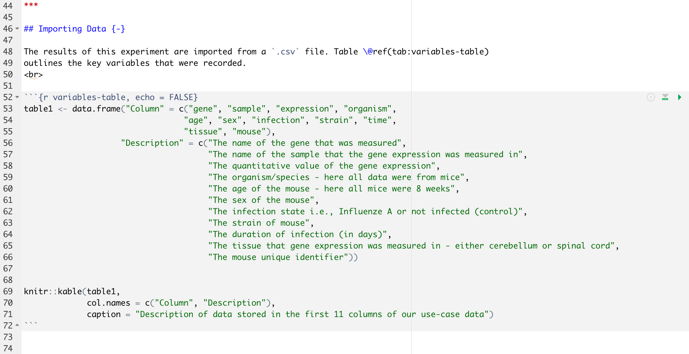

Objectives:
include, echo, message, warning, fig.width, fig.height, fig.alignpdf, htlm or word doc filesWhen using R Markdown to create academic documents, whether these be analysis or reports, it is common to want to include references.
To do this you need to create a separate bibliography file (.bib) that contains all of the required references in a BibTeX format.
Many referencing management tools will allow references to be exported in a BibTeX format. However, if you are struggling to access these, you can use websites such as doi2bib to generate BibTeX references from a doi, PMCID, or ArXiv ID.
Once we have a .bib file saved in our working directory, we add the file path to our R Markdown header under bibliography: reference_file_name.bib. Items can then be referenced within the R Markdown document using the @key syntax, where the key is given in the BibTeX database. To put citations in parentheses, use [@key]. To cite multiple entries, separate the keys by semicolons, e.g., [@key-1; @key-2; @key-3]. To create a link from the in-text citation to the corresponding reference in the bibliography, we add link-citations: yes to our header.
The default referencing style is Chicago author-date format. To change the referencing style we add another argument to our header with a link to a CSL (Citation Style Language) file. The CSL files for most major referencing styles can be found at the Zotero Style Repository.
Challenge: Adding references using a .bib file
Go to Blackmore et al., 2017 add use the paper doi to generate a BibTeX format reference. Save this in a .bib file (can be done from a standard text editor) and create a link to this file in your R Markdown header. Use the @key syntax to add this in-text citation with a link to the bibliography.
To create the BibTeX reference, simply copy and paste the doi at doi2bib. Open a plain text file and copy the resulting reference in. Save this file with a .bib extension in the project working directory. To the header, add:

Add [@Blackmore2017] to include the in-text citation.
We saw in the last lesson that tables and images can be added to an R Markdown document using the knitr functions kable and include_graphics. It is also possible to make reference to these tables and figures in the Markdown text. To do so:
r in the code chunk\@ref(fig:r_chunk_name) or \@ref(tab:r_chunk_name) 
The above image could be referenced by typing “… as show in Figure \@ref(fig:image-name). You don’t need to keep track of which number each figure/table is, R does this for you.
Important: To use this syntax, we need to have out output set to an updated .html format. Change the header to output: bookdown::html_document2.
To add an external link to a webpage we can use []() syntax. Inside the first set of square brackets type the text which you wish to be rendered in Markdown with the link, and then add the link itself into the second brackets. For example [click here](https://www.wolfson.cam.ac.uk) would render as:
Challenge: Cross-referencing
Using the knitr kable function, create the next section of your .html file to look as it does in the figure below. Create a cross-reference to the table in the text.

Note: Now that we are using the bookdown::html_document2 output, each heading will be numbered by default. To avoid this unwanted numbering, add {-} next to each header.
In R Markdown this would look like:

We can use code chunks to insert images and tables (through the use of knitr). We can also use code chunks to do normal coding, as we would normally in a script.
Sometimes we may not want the code chunk to be displayed in the output, only the results which it produces. Similarly, perhaps we want the code chunk to be there but not to be executed. These types of instruction are provided in the chunk options, that is in the curly brackets at the top of the chunk. The most used chunk options are shown in the table below.
| Option | Function | Default |
|---|---|---|
| eval | Should the code be evaluated (i.e., executed)? | eval = TRUE |
| include | Should the code chunk and results be included in the final output? | include = TRUE |
| echo | Should the code chunk be displayed? | echo = TRUE |
| warning | Should warning messages be displayed in the output? | warning = TRUE |
| error | Should error messages be displayed in the output? | error = FALSE |
| message | Should any messages be displayed in the output? | message = TRUE |
| results | How should the results be displayed? | results = markup |
| cache | Should the results be cached for future renders? | cache = FALSE |
| fig.width and fig.height | What width and height should a plot be rendered (in inches)? | fig.width = 7 |
| fig.align | How should the plot be centered | fig.align = left |
I want the code chunk to appear but don’t want to code to be executed (i.e., no results generated or displayed)
eval = FALSE
I want the code chunk to appear and be executed, but no output to be displayed.
results = "hide"
I don’t want any code to be displayed, but I want the code to be executed and results displayed
echo = FALSE
I don’t want want any code or results to be displayed, but I do want the code to be executed
include = FALSE